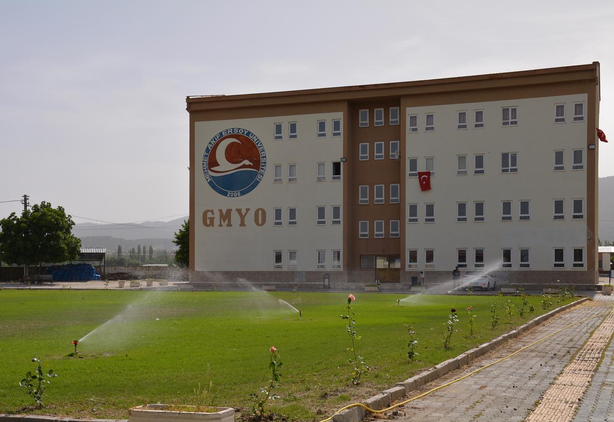

Gölhisar Meslek Yüksekokulu
Gölhisar Meslek Yüksekokulu 1999–2000 eğitim-öğretim döneminde “Elektrik” ve “Bilgisayarlı Muhasebe ve Vergi Uygulamaları” programlarıyla Süleyman Demirel Üniversitesine bağlı olarak eğitim ve öğretime başlamış, 01.03.2006 tarih ve 5467 sayılı kanunla 2006 yılında kurulan Mehmet Akif Ersoy Üniversitesi’ne bağlanmıştır. Önlisans düzeyinde eğitim-öğretim yapan ve kısa sürede gelişmesini ve büyümesini tamamlayan Yüksekokulumuz, toplam 7 bölüm altında 11 program ile eğitim öğretime devam etmektedir. 34 kişilik eğitmen kadromuzda 5 Doktor Öğretim Üyesi, 2 Doktor Öğretim Görevlisi, 27 Öğretim Görevlisi, bulunmaktadır. 14 çalışandan oluşan bir idari kadro ile öğrencilerimize ve öğretim elemanlarımıza hizmet verilmektedir. Öğrencilerimize; öğrenimleri sırasında çalışma hayatları boyunca gerekli tüm teorik bilgilerin yanı sıra, sahip olduğumuz laboratuvarlar sayesinde, pratik beceriler de etkin bir biçimde verilmektedir. Ayrıca öğrencilerimizin gelecekte içinde bulunacakları iş dünyasının rekabetçi şartları altında başarılı olmaları için, eğitim ve öğretim faaliyetlerinin yanında sosyal ve kültürel etkinliklere de ağırlık verilmekte, bu bağlamda 6 öğrenci topluluğu ile öğrencilerimiz desteklenmektedir. Böylece Yüksekokulumuzdaki sosyal, kültürel ve sportif etkinliklerle öğrencilerimize çağın şartlarına göre bilgi ve beceri kazandırmanın yanında kendilerini sürekli geliştiren bireyler olarak yetişmeleri için fırsatlar da sağlanmaktadır. Fiziki yapılanma olarak, 60.000 m2’lik kampüste, 5300 m2’lik kapalı alana ve 1250m2’lik sosyal tesislere sahip yüksekokulumuzda 20 adet derslik, 7 adet laboratuvar, 1 adet internet bağlantılı çalışma salonu, 1 adet konferans salonu, 1 adet amfi ile modern eğitim verilmektedir. Öğrencilerimizin sosyal, kültürel ve sportif faaliyetleri için ise 1 adet futbol sahası, 2 adet basketbol-voleybol sahası 1 adet de fitnes salonu hizmet vermektedir.